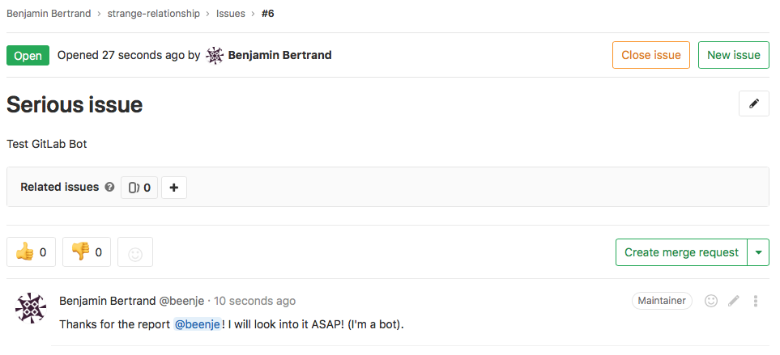

Building a GitLab bot using gidgetlab and aiohttp
At PyCon 2018, Mariatta held a Build-a-GitHub-Bot Workshop. The full documentation can be found on GitHub.
I went through the tutorial and really enjoyed it. This is how I discovered gidgethub from Brett Cannon, an async GitHub API library for Python.
I use GitLab at work and really wanted to do the same thing. So I created gidgetlab, a clone of gidgethub for GitLab.
In this post I want to demonstrate how to build a GitLab bot in the exact same way. My goal is not to repeat the full github-bot-tutorial but to show the differences for GitLab. So I strongly suggest that you check the github-bot-tutorial first. I won't go in as much details.
Note that this post will describe how to interact with gitlab.com but gidgetlab can of course be used with a private GitLab instance!
Using gidgetlab on the command line
This is the equivalent of using gidgethub on the command line. So let's create an issue on GitLab using the API via the command line, instead of the GitLab website.
Install gidgetlab and aiohttp
Install gidgetlab and aiohttp if you have not already. Using a virtual environment is recommended.
python3.6 -m pip install gidgetlab[aiohttp]
Create a GitLab Personal Access Token
In order to use GitLab's API, you'll need to create a personal access token that will be used to authenticate yourself to GitLab.
-
Go to https://gitlab.com/profile/personal_access_tokens
Or, from GitLab, go to your Settings > Access Tokens.
-
Under Name, enter a short description, to identify the purpose of this token. I recommend something like: bot tutorial.
-
Under Scopes, check the api scope.
-
Click Create personal access token. You will see your new personal access token (a 21 characters string). Click on the copy to clipboard icon and and paste it locally in a text file for now. If you have a password manager like 1password, use that.
This is the only time you'll see this token in GitLab. If you lose it, you'll need to revoke it and create another one.
Store the Personal Access Token as an environment variable
In Unix / Mac OS:
export GL_ACCESS_TOKEN=your token
In Windows:
set GL_ACCESS_TOKEN=your token
Note that these will only set the token for the current process. If you want this value stored permanently, you have to edit the bashrc file.
Create an issue
Open a new file, for example create_issue.py in your favorite editor.
Copy the following into create_issue.py. Instead of "beenje" however, use your own GitLab username:
import asyncio
import os
import aiohttp
from gidgetlab.aiohttp import GitLabAPI
async def main():
async with aiohttp.ClientSession() as session:
gl = GitLabAPI(session, "beenje", access_token=os.getenv("GL_ACCESS_TOKEN"))
loop = asyncio.get_event_loop()
loop.run_until_complete(main())
We only instantiate a GitLabAPI class from gidgetlab by passing who we are ("beenje" in this example) and our GitLab personal access token stored in the GL_ACCESS_TOKEN environment variable. Note that to interact with a private GitLab instance, you just have to pass the url to GitLabAPI:
gl = GitLabAPI(session, "beenje", access_token=os.getenv("GL_ACCESS_TOKEN"),
url="https://mygitlab.example.com")
By default, the url is set to https://gitlab.com.
So let's create an issue in one of my personal repo. Take a look at GitLab's documentation for creating a new issue.
To create an issue, you should make a POST request to the url /projects/:id/issues and supply the parameters title (required) and description. The id can be the project ID or URL-encoded path of the project owned by the authenticated user.
With gidgetlab, this looks like the following:
await gl.post(
"/projects/beenje%2Fstrange-relationship/issues",
data={
"title": "We got a problem",
"description": "Use more emoji!",
})
beenje%2Fstrange-relationship is the URL-encoded path of the project. We could have used the id 7898119 instead. The project ID can be found on the project main page.
Add the above code right after you instantiate GitLabAPI. Your file should now look like the following:
import asyncio
import os
import aiohttp
from gidgetlab.aiohttp import GitLabAPI
async def main():
async with aiohttp.ClientSession() as session:
gl = GitLabAPI(session, "beenje", access_token=os.getenv("GL_ACCESS_TOKEN"))
await gl.post(
"/projects/beenje%2Fstrange-relationship/issues",
data={
"title": "We got a problem",
"description": "Use more emoji!",
})
loop = asyncio.get_event_loop()
loop.run_until_complete(main())
Feel free to change the title and the body of the message. Save and run it in the command line:
python3.6 -m create_issue
There should be a new issue created in the strange-relationship project. Check it out: https://gitlab.com/beenje/strange-relationship/issues
Comment on issue
Let's try a different exercise, to get ourselves more familiar with GitLab's API. Take a look at GitLab's create a comment documentation: POST /projects/:id/issues/:issue_iid/notes
Leave a comment in the issue you just created:
await gl.post(
"/projects/beenje%2Fstrange-relationship/issues/1/notes",
data={"body": "This is a comment"},
)
Replace 1 with the issue number you created.
Close the issue
Let's now close the issue that you've just created.
Take a look at the documentation to edit an issue.
The method for editing an issue is PUT instead of POST, which we've seen in the previous two examples. In addition, to close an issue, you're basically editing an issue, and setting the state_event to close.
Use gidgetlab to close the issue:
await gl.put(
"/projects/beenje%2Fstrange-relationship/issues/1",
data={"state_event": "close"},
)
Replace 1 with the issue number you created.
Using gidgetlab to respond to webhooks
In the previous example, we've been interacting with GitLab by doing actions: making requests to GitLab. And we've been doing that locally on our own machine.
In this section we'll use what we know so far and start building an actual bot: a webserver that responds to GitLab webhook events.
GitLabBot
gidgetlab actually provides a GitLabBot class to easily create an aiohttp web server that reponds to GitLab webhooks.
Save the following in a file named bot.py:
from gidgetlab.aiohttp import GitLabBot
bot = GitLabBot("beenje")
if __name__ == "__main__":
bot.run()
And run:
python3 bot.py ======== Running on http://0.0.0.0:8080 ======== (Press CTRL+C to quit)
That's it. You have an aiohttp web server running on port 8080. Of course, it won't do that much. You'll have to register some events if you want the bot to perform some actions. We'll see that later.
Webhook events
When an event is triggered in GitLab, GitLab can notify you about the event by sending a POST request along with the payload.
Some example events are:
- Issues events: any time an issue is created or an existing issue was updated/closed/reopened
- Push events: when you push to the repository except when pushing tags
- Tag events: when you create (or delete) tags to the repository
- Build events: triggered on status change of a Build
The complete list of events is listed here.
Since GitLab needs to send you POST requests for the webhook, you should have a service running somewhere that GitLab can reach. That's usually not on your laptop.
GitHub bot tutorial describes how to deploy your webservice to Heroku. Heroku is a platform as a service and makes it easy to deploy and run your app in the cloud. There are alternatives and you can of course use on your own servers if you want.
For testing purpose, you can actually use your own laptop thanks to ngrok.
Ngrok
Ngrok exposes local servers behind NATs and firewalls to the public internet over secure tunnels. It's an easy way to test locally a webservice.
Check the installation instructions from the website. Note that for simple tests, you don't have to register an account.
If you have a webserver running locally on port 8080, you can expose it by running:
ngrok http 8080
Something similar will appear:
ngrok by @inconshreveable (Ctrl+C to quit) Session Status online Session Expires 7 hours, 59 minutes Version 2.2.8 Region United States (us) Web Interface http://127.0.0.1:4040 Forwarding http://fb7fec7c.ngrok.io -> localhost:8080 Forwarding https://fb7fec7c.ngrok.io -> localhost:8080
You can access your local webservice using HTTP and even HTTPS!
curl -X GET https://fb7fec7c.ngrok.io
This address can be accessed from anywhere!. You could give it to a friend or use it as a GitLab webhook.
Ngrok even gives you a web interface on the port 4040 that allows you to inspect all the requests made to the service. Just open http://127.0.0.1:4040 in your browser.

If your bot is still running and you tried to send a GET, you should get a 405 as reply. Only POST methods are handled by the bot.
If you don't have any service listening on port 8080 and try to access the URL given by ngrok, you'll get a 502.
Add the GitLab Webhook
Now that we have a local webservice that can receive requests thanks to ngrok, let's create a webhook on GitLab. If you haven't done so yet, create your own project on GitLab.
Go to your project settings and select Integrations to create a webhook:
- In the URL field, enter the ngrok URL you got earlier.
- For security reasons, type in some random characters under Secret Token (you can use Python secrets.token_hex(16) function)
- Under Trigger, select Issues events, Comments and Merge request events
- Leave Enable SSL verification enabled
- Click Add webhook
Update the Config Variables in your environment
First, export the secret webhook token you just created:
export GL_SECRET=<secret token>
Then, if not already done, export your GitLab personal access token:
export GL_ACCESS_TOKEN=<acess token>
Your first GitLab bot!
Let's start with a bot that responds to every newly created issue in your project. For example, whenever someone creates an issue, the bot will automatically say something like: "Thanks for the report, @user. I will look into this ASAP!"
To respond to webhooks events, we have to register a coroutine using the @bot.router.register decorator:
@bot.router.register("Issue Hook", action="open")
async def issue_opened_event(event, gl, *args, **kwargs):
pass
In this example we subscribe to the GitLab Issue Hook events, and more specifically to the "open" issues event.
The two important parameters here are: event and gl.
- event here is the representation of GitLab's webhook event. We can access the event payload by doing event.data.
- gl is the gidgetlab GitLabAPI instance, which we can use to make API calls to GitLab, as in the first section.
We already saw that to create a comment on an issue, we need to send: POST /projects/:id/issues/:issue_iid/notes.
Let's look at the Issues events payload to see how we can retrieve the required information:
{
"object_kind": "issue",
"user": {
"name": "Administrator",
"username": "root",
"avatar_url": "http://www.gravatar.com/avatar/e64c7d89f26bd1972efa854d13d7dd61?s=40\u0026d=identicon"
},
"project": {
"id": 1,
"name":"Gitlab Test",
"description":"Aut reprehenderit ut est.",
"web_url":"http://example.com/gitlabhq/gitlab-test",
"avatar_url":null,
"git_ssh_url":"git@example.com:gitlabhq/gitlab-test.git",
"git_http_url":"http://example.com/gitlabhq/gitlab-test.git",
"namespace":"GitlabHQ",
...
},
"repository": {
"name": "Gitlab Test",
"url": "http://example.com/gitlabhq/gitlab-test.git",
"description": "Aut reprehenderit ut est.",
"homepage": "http://example.com/gitlabhq/gitlab-test"
},
"object_attributes": {
"id": 301,
"title": "New API: create/update/delete file",
...
"state": "opened",
"iid": 23,
"url": "http://example.com/diaspora/issues/23",
"action": "open"
},
...
}
The project id can be retrieved as event.data["project"]["id"]. As this is quite common, gidgetlab procures a project_id property to access it directly: event.project_id.
To get the issue id, we can use event.data["object_attributes"]["iid"]. Again as accessing event.data["object_attributes"] is quite common, we can use the object_attributes property: event.object_attributes["iid"].
The url to use is thus:
url = f"/projects/{event.project_id}/issues/{event.object_attributes['iid']}/notes"
To greet the author, we have to retrieve the username from the event: event.data["user"]["username"]
Open your bot.py file and add the following coroutine to be called when a new issue is opened:
@bot.router.register("Issue Hook", action="open")
async def issue_opened_event(event, gl, *args, **kwargs):
"""Whenever an issue is opened, greet the author and say thanks."""
url = f"/projects/{event.project_id}/issues/{event.object_attributes['iid']}/notes"
message = f"Thanks for the report @{event.data['user']['username']}! I will look into it ASAP! (I'm a bot)."
await gl.post(url, data={"body": message})
The full file should look like:
from gidgetlab.aiohttp import GitLabBot
bot = GitLabBot("beenje")
@bot.router.register("Issue Hook", action="open")
async def issue_opened_event(event, gl, *args, **kwargs):
"""Whenever an issue is opened, greet the author and say thanks."""
url = f"/projects/{event.project_id}/issues/{event.object_attributes['iid']}/notes"
message = f"Thanks for the report @{event.data['user']['username']}! I will look into it ASAP! (I'm a bot)."
await gl.post(url, data={"body": message})
if __name__ == "__main__":
bot.run()
Run:
python3 bot.py
Go to your project and open an issue. Wait a few seconds and refresh the page. You should see a new comment added to the issue!
Congrats! You wrote your first GitLab bot!
Of course, using ngrok on your laptop was for testing only. To use it in production, you should deploy it to a server or the cloud. You can check the GitHub bot tutorial to see how to deploy your webservice to Heroku.
Conclusion
Hopefully this gave you an idea of what can be done with gidgetlab.
If you are interested, try to perform the other exercices described in the github-bot-tutorial but using GitLab. Don't hesitate to let me know if you use gidgetlab to build something cool :-)
Again, a big thanks to Mariatta for her tutorial and to Brett Cannon for gidgethub! This project wouldn't exist otherwise.
Comments
Comments powered by Disqus